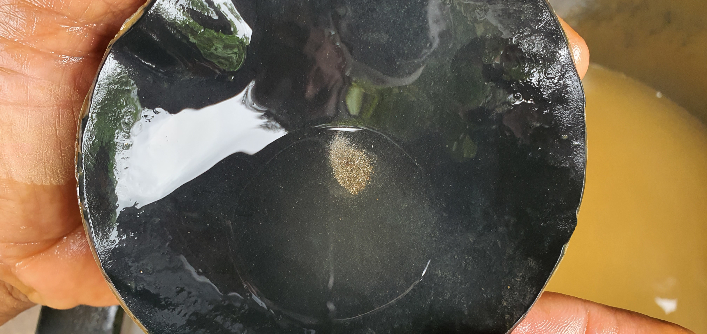
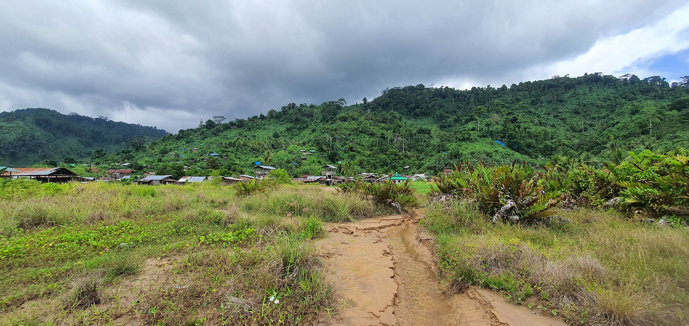
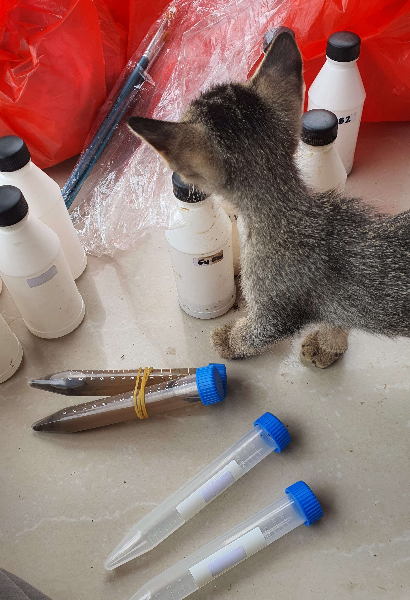
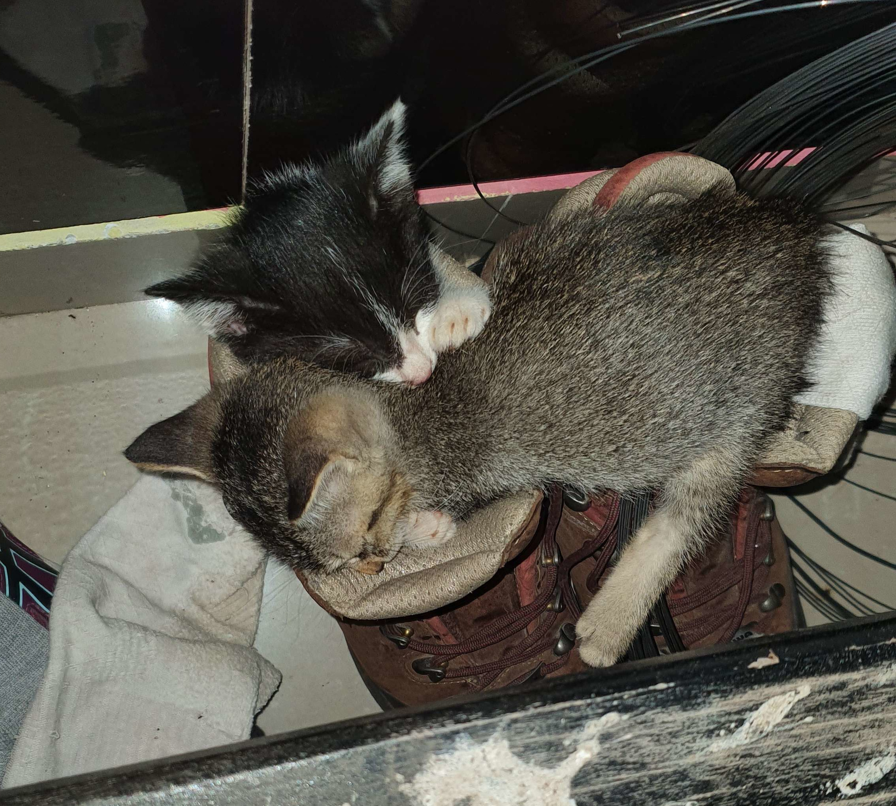
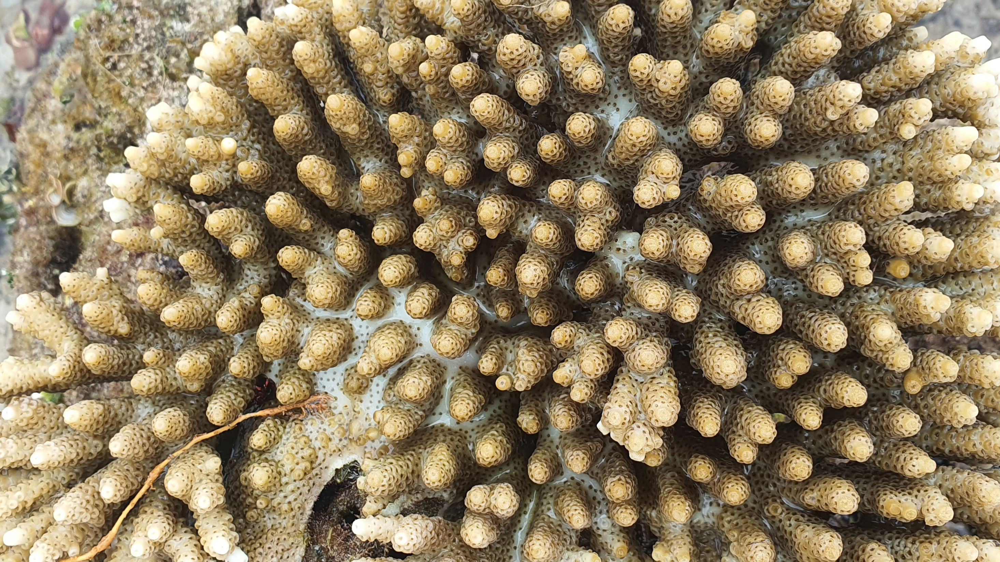

Back in the Office, with Some Good Omens: Recountings on Seeking the Eureka for Mercury Contamination in Obi
Fresh off the boat—or in this case, a whole bunch of them—one of the Laboratory of Ecology and Conservation's own lecturers has returned from a research excursion to far-off Obi, alongside a consortium of scientists from the Center for Applied Microbiology Research, Hasanuddin University, SEAMEO-BIOTROP, Universitas Hein Namatemo, and several departments of the Ministry of Environment and Forestry. A remote island in the North Maluku group of islands in eastern Indonesia, Obi poses considerable risk to time-sensitive research, owing to the difficulty of either regular or timely access to it. From Ternate, where travelers will usually disembark, an overnight ferry is required, comprising over a day of waiting as time curled its cruel paw over the fate of their samples. Highlighting the temerity required by field researchers who focus on Earth's less glamorous landscapes, chief researcher Dr. Retno Prayudyaningsih said, "It was very difficult. By the time we got to the airport, we were already struggling to keep our samples in a stable condition."
How did they find themselves here?
A complex, multifaceted project
Obi island is composed of two specific—and diametrically opposite—mining scales. On the one hand, a colossal mining operation several dozen square-kilometers in size can be found on its western coast. This operation aims to extract nickel-cobalt and adjacent metals, with the long-term goal of the large-scale extraction of resources destined for (among other things) battery-powered vehicles. And then there is Obi's northern coast, where gold is mined predominantly by locals, at a scale significantly smaller—to put it mildly—than the one to the west. Reportedly, 800 such artisanal or small-scale gold mining (ASGM) sites are dotted around Indonesia, with Obi being host to a fair number of them. Even though one may proverbially say it's always sunny in Obi, at a socio-economic level, this gold may be the primary driver of both people's migration to the island and their reason for subsisting on it for at least the past 25 years, considering what few other realistic economic opportunities there are.

Gold has been found. Photo: SN Marliana.
Small-scale gold mining, which encompasses an amalgamation process wherein gold must be separated from the ore, is characterized by the usage of mercury (or based on more recent developments, cyanide) for this process, and consequently outputs as a byproduct of its refinement tailings (in this case, fluvial output) chemicals that inevitably contaminate any environment they enter. Mercury may pollute the water and soil around these small-scale mines, consequently threatening the lives of both miners and the surrounding communities if this contamination exceeds safe thresholds.
ASGMs are second only to fossil fuel burning as the largest source of mercury pollution in the world. On the surface of landscapes, its effects can be devastating—see, for example, Kereng Pangi—but for local people, they are far more sinister, slowly eating away at their coordination, ability to speak, and causing birth defects in their children. This neurological damage caused by mercury poisoning is irreversible, and may already have happened in Obi, unbeknownst to its people, who tend to focus more on making a life for themselves and their families than the arcane rules and regulations made on the other side of their world by people who don't know them. But this, right here, is where the researchers came in.

A small-scale gold mining operation in Obi island, Indonesia. Photo: SN Marliana.
A diverse, intranational group of scientists—composed of experts from the National Research and Innovation Agency, several universities, and multiple research centers—came together to tackle this problem from a bioremediative and ecological perspective. "It is very urgent to prevent [the impact of mercury pollution] on the environment," they said in their highly thorough proposal for the project. The veritable "it crowd" of scientists spanned the breadth of the vast Indonesian archipelago, and the outcomes of their work has potential implications not just for the mines of Obi, but all 800 (and counting) of the mines across Indonesia—not to mention beyond, where millions more miners are at risk.
Not a shroom
It has been suggested that global health may be at a tipping point. We are in this precarious position because of near-unabated industrial emissions—into the atmosphere, soils, and water—of environmental pollutants. These xenobiotic compounds, be they plastics, pesticides, heavy metals, or carcinogenic substances such as PCBs, make their way into humans, leaching into the food we eat or products we use. Traditional methods for remediating them are costly, and when cost is not an issue, they have proven frustratingly ineffective, necessitating an alternative that is safe, economical, environmentally friendly, and biologically rooted in its methods.
Dr. Prayudyaningsih's specific approach is grounded in the bioremediative potential of microbes, which have been demonstrated to affect heavy metal contamination, while being environmentally friendly, efficient, and cheaper than traditional methods. Such a microbe is arbuscular mycorrhizal fungi, which can, through symbiosis, increase plant resistance and absorption of heavy metal contamination. Another approach is to use locally available plant species that have an ability to absorb and accumulate heavy metal compounds. It's especially important that these are locally available species, as importing alien species, regardless of their effectiveness, can have unforeseen consequences for native ecosystems, leaving them with arrested development or, worse, completely taken over by a species that goes on to become invasive.
Meanwhile, combining bioremediation together with phytoremediation results in rhizoremediation, a technique that may speed things up even more when it comes to the reduction of mercury contamination in ASGM areas. This was ultimately the team's focal point, with a two-year project dedicated firstly to data gathering and then restoration of the ASGM areas through rhizoremediation with locally resistant arbuscular mycorrhizal fungi.
In this comprehensive first phase, the team sought to (a) explore, isolate, and identify local mycorrhizal fungi as mercury bioremediators, (b) explore, identify, and molecularly detect local plants as mercury phytoremediators, and (c) assess the condition of former ASGMs, and the distribution of mercury contamination. The subsequent phase will comprise the development and trialing of inoculations, and ultimately the project will produce the rhizoremediation technology to combat mercury contamination in as many small-scale gold mines as possible, helping local communities to restore environmental damage and reduce the impact of mercury pollution on human health and living standards.
Feline friends made on the way

A kitten participates diligently in the research work. Photo: SN Marliana.
A particular feature of Obi, like elsewhere in Indonesia, was its wildlife, in the sense of both what was found and what wasn't. As one might expect from such a remote location, wildlife not already present on the island upon the arrival of humans (such as birds) have remained notably absent. Large bovine animals are a rarity, but smaller grazing animals, such as goats and sheep, less so. In general, this followed the dietary trends of the local people. Where red meat consumption is uncommon, so is the presence of the animals that would provide such meat, and in this part of Obi, red meat consumption was rare, indeed. Conversely, an omnipresent resident was that loyal (sometimes, at least) companion of humans, the house cat.
The reality for Obi's feline denizens is that the comforts of their more urban brethren are not so easy to come by there. Whiskas? Nope. Royal Canin? If only. Their meals constitute not the manufactured pellet products of brands common in the more populated western Islands but the delicious, fishy morsels—the leftovers—of whomever is willing to give them up. As any cat owner will know, however, this is not all for the worst, because as far as most cats are concerned, fish morsels make for the best dinners.

Kittens convert one of the researcher's shoes into a comfy bed. Photo: SN Marliana.
For the researchers' part, two particular cats came under their care during the study: Honey 1 and Honey 2, two orphaned kittens. Fed an endless supply of the available treats, these kittens grew round and plump and wound up in a clump in one of their shoes, repurposing the soft cushioning to their own satisfaction as the sprinklings of the Sandman's dust littered their innocent heads.
Heartrending as it was to say goodbye to these kittens, the researchers were buoyed by one of the research assistants' willingness to take them in. The toast of Obi, an efficient worker, and highly capable guide for the duration of the research, Bayz happily took over the duties of caring for the kittens. Said Siti Nurleily Marliana (who like many Indonesians goes by a nickname, in this case "Lelly"), the researcher from the Laboratory of Ecology and Conservation: "They will still have a home, and the people love them. Even local children apparently come by to see the kittens."
Into farther waters: revelations from further exploration of Obi's (salt)waters
The team of researchers also ventured beyond the pools of the mining areas to a somewhat larger body of water: the ocean. For as long as it has existed for island peoples, the ocean has provided them with the source of long lives lived in abundance. Of food, livelihoods, exploration, and most importantly, of mental well-being. The acceleration of ocean acidification threatens more than island peoples' access to food and livelihoods. It threatens to erode marine landscapes' long-held function as a foundational element of people's happiness. In short, destruction of the Earth's oceans is a human health concern. It will lead to malnutrition, poisoning, failures to develop medical resources, and a steady loss of "blue space," the sights and sounds that make life worth living, regardless of socioeconomic conditions.
A troubling, compounding factor is that the cost—financial and otherwise—of climate resilience is not borne equally between the richest and poorest, or in the context of Obi, the richest, most centrally located islands, and the poorer, more remote ones. It's also worth mentioning the resource drains that limit resource-rich but development-poor regions' mitigation abilities. This inequitable distribution of both climate challenges and climate resilience, as faced by the respective islands' most vulnerable segments, continues to be exacerbated by climate proclamations that scarcely take these communities into account.
It's not coincidental that the aforementioned proclamations consistently forefront economic interests over ecological ones, with the former—evidence has shown—tending to be more harmful than not, besides lacking scientific or developmental soundness, despite the use of marketing buzzwords such as "sustainable" and "biodiversity."
Obi's pristine beaches and abundant marine life were remarkable, a fact that was in no small part related to the equivalent lack of tourists, contrasting the beaches of Java, which are "ugly and have too many visitors and businesses," according to a researcher with experience in both. In this setting, climate change looms large, though not on the minds of the locals, even though they will be the first to feel its effects, and struggle most to overcome them. Little attention has been given to these areas, at least non-exploitatively. The overwhelming lesson of this brief observation is how much will be lost before it is ever known.

Loss of corals will have a deleterious effect on human well-being. Photo: SN Marliana.
"Like Deadwood"
Carrying out the first phase of this project in Obi was, as much as anything, a feat. The island tested the intrepid researchers' mettle. While exploring a mining area, one of the researchers exclaimed that it was "like Deadwood," albeit specifically not in the brazen and wanton absence of passivity. The island evoked a certain sense of derring-do, where in the absence of easy access to frivolity, one must make the best with what they have. For the researcher from Java (the farthest island from the research location), it took two days, multiple flights, and multiple ferry rides to reach the island; and for the samples the team collected, it was a race against time, as well as the climate itself.
When Dr. Prayudyaningsih brought up the near-loss of their samples, her fears must be not be underestimated. A portion was kept in ice, and while in transit, this ice began to melt—rapidly. Naturally, they couldn't get to a convenience store to buy some more while in the middle of a turbulent ocean, and so all they could do was wait and hope. Once back on land, they sprung into action to save the samples, before embarking on the subsequent leg of their journey, their samples safely in tow. Sources say the airport floor was quite wet from the harried and hurried activity, but the airport staff are yet to confirm.
Each one back home, the consortium now begins the next phase of the project. Analysis of the samples will inform the remediation of the gold mines of Obi, and help to make these environments safer for the children who play in their adjacent pools. And while questions await answers, one observation is already clear—to quote an astonished Lelly at the time, "The water and soil and air may have been contaminated, but in Obi, all of my headaches were gone."